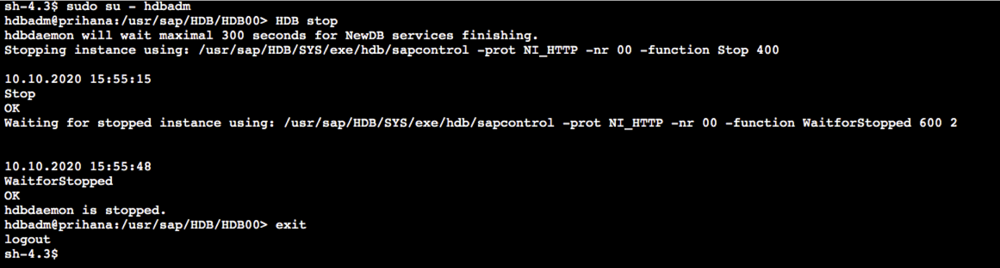
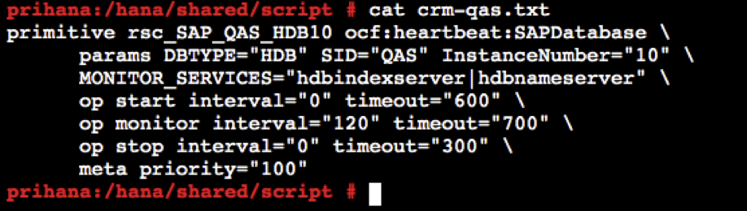
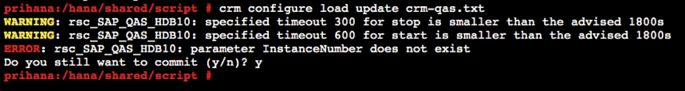
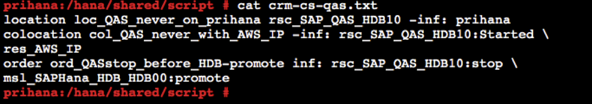
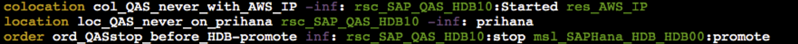
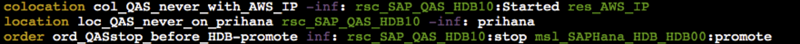
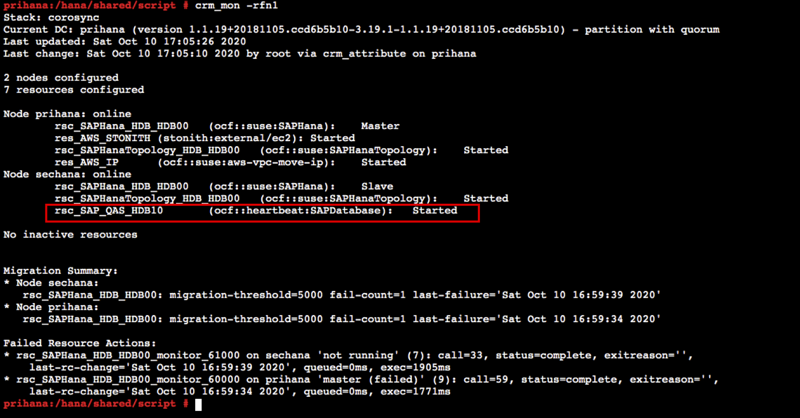

Task 03. Change Config of the Cluster for QAS system
Task 03에서는 기존 Cluster 구성을 변경하여 기존 HANA Database와 새로 추가된 QAS HANA Database를 관리할 수 있도록 변경할 것입니다.
- Cost Optimized 시나리오 변경을 위해서는 아래와 같이 Cluster의 HANA DB 리소스에 대한 PREFER_SITE_TAKEOVER 옵션 변경이 필요합니다. 자세한 사항은 아래 링크를 참고하시기 바랍니다.
-
Cluster 설정을 위해 sechana, prihana 노드의 DB 모두 stop 합니다.
-
Session Manager를 통해 sechana에 접속합니다.
-
AWS Management Console에 로그인 한 뒤 EC2 Instance Console에 접속 합니다.
-
HANA-HDB-Secondary 인스턴스를 선택하고, Action을 선택하고, Connect을 선택 합니다.

-
Session Manager 를 선택하고, Connect 버튼을 누릅니다.

-
QAS DB를 Stop 합니다.
sudo su - qasadm HDB stop exit
- HDB DB를 Stop 합니다.
sudo su - hdbadm HDB stop exit
-
-
sechana 접속을 유지하고, Session Manager를 통해 prihana에 접속합니다.
- AWS Management Console에 로그인 한 뒤 EC2 Instance Console에 접속 합니다.
- HANA-HDB-Primary 인스턴스를 선택하고, Action을 선택하고, Connect을 선택 합니다.

- Session Manager 를 선택하고, Connect 버튼을 누릅니다.
- HDB DB를 Stop 합니다.
sudo su - hdbadm HDB stop exit
-
-
prihana에서 root 유저로, Cluster 의 HANA DB 리소스에 대한 PREFER_SITE_TAKEOVER 옵션을 true 에서 false로 변경합니다.
- prihana의 유저를 root로 스위치 후, 스니펫 생성을 위한 폴더를 생성 합니다
sudo su - mkdir -p /hana/shared/script/ cd /hana/shared/script/- VI 편집기를 이용하여, 아래와 같이 스니펫 생성을 생성 합니다.
vi crm-SAPHana-update.txt primitive rsc_SAPHana_HDB_HDB00 ocf:suse:SAPHana \ operations $id=rsc_sap_HDB_HDB00-operations \ op start interval=0 timeout=3600 \ op stop interval=0 timeout=3600 \ op promote interval=0 timeout=3600 \ op monitor interval=60 role=Master timeout=700 \ op monitor interval=61 role=Slave timeout=700 \ params SID=HDB InstanceNumber=00 PREFER_SITE_TAKEOVER=false DUPLICATE_PRIMARY_TIMEOUT=7200 AUTOMATED_REGISTER=true
- 생성한 스니펫을 crm에 반영 합니다.
crm configure load update crm-SAPHana-update.txt- 업데이트 된 crm 설정을 확인 합니다.
crm config show
-
prihana에서 root 유저로, Cluster에 QAS HANA DB를 위한 리소스를 등록 합니다.
- VI 편집기를 이용하여, 아래와 같이 스니펫 생성을 생성 합니다.
vi crm-qas.txt primitive rsc_SAP_QAS_HDB10 ocf:heartbeat:SAPDatabase \ params DBTYPE="HDB" SID="QAS" InstanceNumber="10" \ MONITOR_SERVICES="hdbindexserver|hdbnameserver" \ op start interval="0" timeout="600" \ op monitor interval="120" timeout="700" \ op stop interval="0" timeout="300" \ meta priority="100"
- 생성한 스니펫을 crm에 반영 합니다.
crm configure load update crm-qas.txt
-
prihana에서 root 유저로, 새로 생성한 QAS HANA DB 리소스 제약사항을 설정 합니다.
- VI 편집기를 이용하여, 아래와 같이 스니펫 생성을 생성 합니다.
vi crm-cs-qas.txt location loc_QAS_never_on_prihana rsc_SAP_QAS_HDB10 -inf: prihana colocation col_QAS_never_with_AWS_IP -inf: rsc_SAP_QAS_HDB10:Started \ res_AWS_IP order ord_QASstop_before_HDB-promote inf: rsc_SAP_QAS_HDB10:stop \ msl_SAPHana_HDB_HDB00:promote
- 생성한 스니펫을 crm에 반영 합니다.
crm configure load update crm-cs-qas.txt- 업데이트 된 crm 설정을 확인 합니다.
crm config show 
 -
prihana에서 root 유저로, Cluster Maintenance 모드를 해제하고 정상적으로 설정 되었는지를 모니터링 합니다.
- Cluster Maintenance 모드를 해제합니다.
crm node ready prihana crm node ready sechana- Cluster 상태를 모니터링 합니다. QAS HANA DB 리소스가 정상적으로 Started 되었는지 확인 합니다.
crm_mon -rfn1
- HSR 상태를 모니터링 합니다. sechana의 status가 SOK 상태인지 확인 합니다.
SAPHanaSR-showAttr
-
sechana에서 qasadm 유저로, QAS HANA DB가 정상적으로 기동 되었는지 확인 합니다.
- HDB process 들이 정상적으로 기동 되었는지 확인 합니다.
sudo su - qasadm HDB info
© 2020, Amazon Web Services, Inc. or its affiliates. All rights reserved.